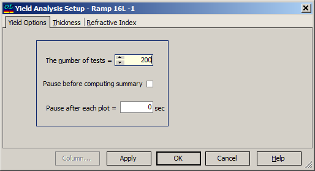

Error Yield Options
Error Yield Options
The Yield Options tab of the Yield Analysis Setup window looks as follows:

The number of tests should be sufficient for statistical analysis (the default value is 20).
The “Pause before computing summary” and “Pause after each plot” options allow slowing down the Error Analysis procedure in order to save intermediate results in graphical form.
The OK button accepts changed values and starts the Error Yield Analysis procedure. Its results are displayed in the Error Yield Analysis window.
See also: